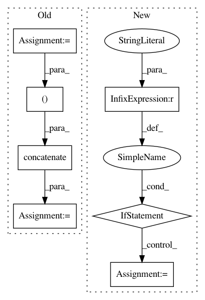

c890a06b4ef71d5827ff9a399e203a37af0191a5,skimage/exposure/exposure.py,,_bincount_histogram,#Any#Any#,38
Before Change
elif source_range == "dtype":
image_min, image_max = dtype_limits(image, clip_negative=False)
image, offset = _offset_array(image, image_min, image_max)
hist = np.bincount(image)
bin_centers = np.arange(image_min, image_max + 1)
// Add zeros at the end of the hist array to get the correct size
zero_hist = np.zeros(image_max - image_min - hist.shape[0] + 1)
hist = np.concatenate((hist, zero_hist))
else:
ValueError("Wrong value for the `source_range` argument")
return hist, bin_centers
After Change
image, offset = _offset_array(image, image_min, image_max)
hist = np.bincount(image.ravel(), minlength=image_max - image_min + 1)
bin_centers = np.arange(image_min, image_max + 1)
if source_range == "image":
idx = max(image_min, 0)
hist = hist[idx:]
return hist, bin_centers
def histogram(image, nbins=256, source_range="image", normalize=False):
In pattern: SUPERPATTERN
Frequency: 3
Non-data size: 7
Instances
Project Name: scikit-image/scikit-image
Commit Name: c890a06b4ef71d5827ff9a399e203a37af0191a5
Time: 2018-12-06
Author: devel@sciunto.org
File Name: skimage/exposure/exposure.py
Class Name:
Method Name: _bincount_histogram
Project Name: keunwoochoi/kapre
Commit Name: 8cdbb1637b140c01f431831e7b2c2a63afc96209
Time: 2020-08-14
Author: gnuchoi+github@gmail.com
File Name: kapre/time_frequency.py
Class Name: Spectrogram
Method Name: call
Project Name: scikit-learn-contrib/imbalanced-learn
Commit Name: 2e7c0700d00da702cdccb7c19b6fe1857b5bd1b7
Time: 2017-08-24
Author: g.lemaitre58@gmail.com
File Name: imblearn/under_sampling/prototype_generation/cluster_centroids.py
Class Name: ClusterCentroids
Method Name: _sample